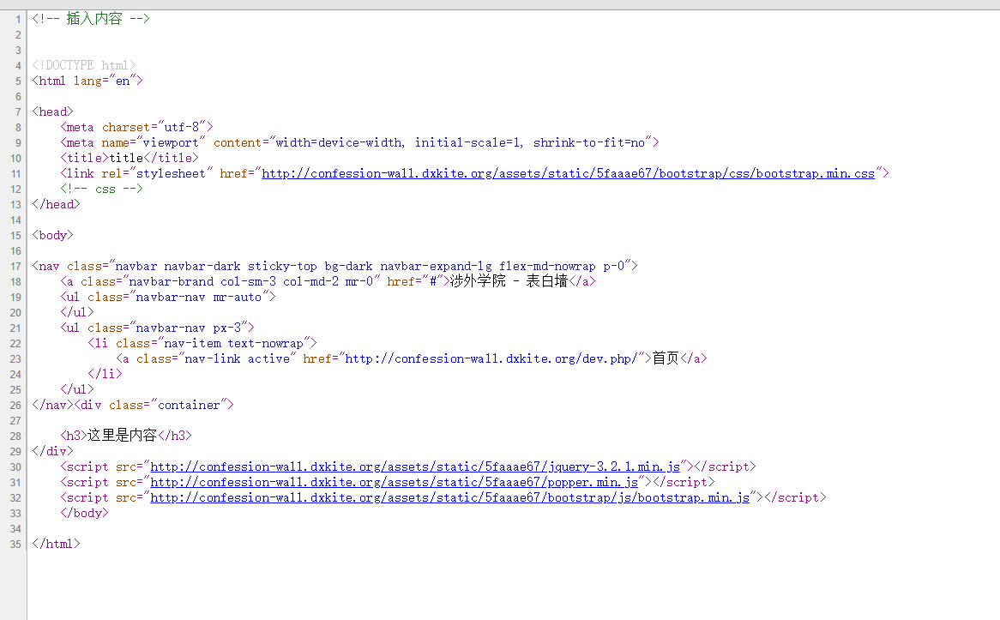
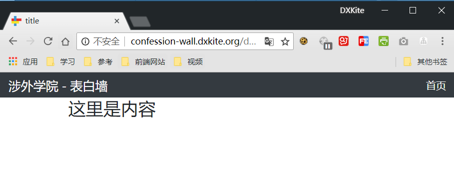

Suda - 12 表白墙数据存储
表白墙首要的功能就是表白功能，首先我们来看看表白功能需要存储那些字段？
数据字段处理
在表白墙中，我们的核心数据字段主要有如下字段：
- 发送用户
- 是否匿名
- 标题
- 内容
- 时间
- IP
- 状态
根据网络安全法的最新规定，我习惯性开发的时候记录操作的IP和时间，所有的数据基本上不会真的被删除，而是标记为一个删除状态。
在这里，我们的内容模块引用了 dxkite-content-parser 模块，这个模块提供了一个比较常用的功能：将输入转码存储，用的时候解码成HTML显示，主要提供了如下函数：
content_create(string $content, string $type=’text’):Content
将字符串创建为内容包
content_pack($content, string $type=’text’):string
将内容包转换为数据库可用的字符串
content_unpack(string $data):?Content
将数据库的字符串解包为内容
content_ispack(string $data)
判断字符串是不是内容包
content_unpack2html($data):?string
解包输出成HTML
content_unpack2raw($data):?string
解包输出原始内容
html_content(string $content, string $type = ‘text’):string
将内容直接输出HTML
我们使用以上函数即可将内容转换为我们想要的内容，并且包还提供了安全处理，现在我们来创建我们的数据表
1 |
|
如上便是我们的数据表结构，本次我们开发准寻一个套路：Table 负责存储、Controller负责数据处理、Provider负责API化显示，开发的时候我们采用 Postman 用来做API的调试
1 | Table->Controller->Provider |
创建简单内容发布页面
这个内容发布页面有几个元素，由于本次项目将直接上线，测试的模板采用 Bootstrap 来构建一个简单的页面。
添加一个页面 /，继承来自support库的响应 dxkite\support\visitor\response\Response，该响应处理基本的请求：
1 |
|
基础套版
因为页面很多地方都似乎是共同的，我先弄一个页面套版：
header.tpl.html 导航栏部分
这里直接是HTML代码，还有一些引入部分的变量，以及判断页面，@b(表达式，成功，失败) 语法类似三元操作符，然后 $this->isMe 用于判断当前的路由是否为指定的路由，这里判断是否为 index 路由。1
2
3
4
5
6
7
8
9
10<nav class="navbar navbar-dark sticky-top bg-dark navbar-expand-lg flex-md-nowrap p-0">
<a class="navbar-brand col-sm-3 col-md-2 mr-0" href="#">{{ $:website_name('涉外学院 - 表白墙') }}</a>
<ul class="navbar-nav mr-auto">
</ul>
<ul class="navbar-nav px-3">
<li class="nav-item text-nowrap">
<a class="nav-link @b($this->isMe('index'),'active')" href="@u('index')">首页</a>
</li>
</ul>
</nav>
layout.tpl.html 布局控制部分
@extend 继承来自support模块的bootstrap模板。@startInsert ... @endInsert 用于往继承的模板中的 @insert 点插入代码。
这里预留了一个插入点 confession-content 用于插入内容。
1 | @extend ('support:bootstrap') |
index.tpl.html
在主页面，继承layout，并在 confession-content 插入点插入内容。1
2
3
4
5@extend ('layout')
<!-- 插入内容 -->
@startInsert('confession-content')
<h3>这里是内容</h3>
@endInsert
所有布局文件完善后：

运行效果

显示：
